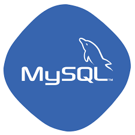
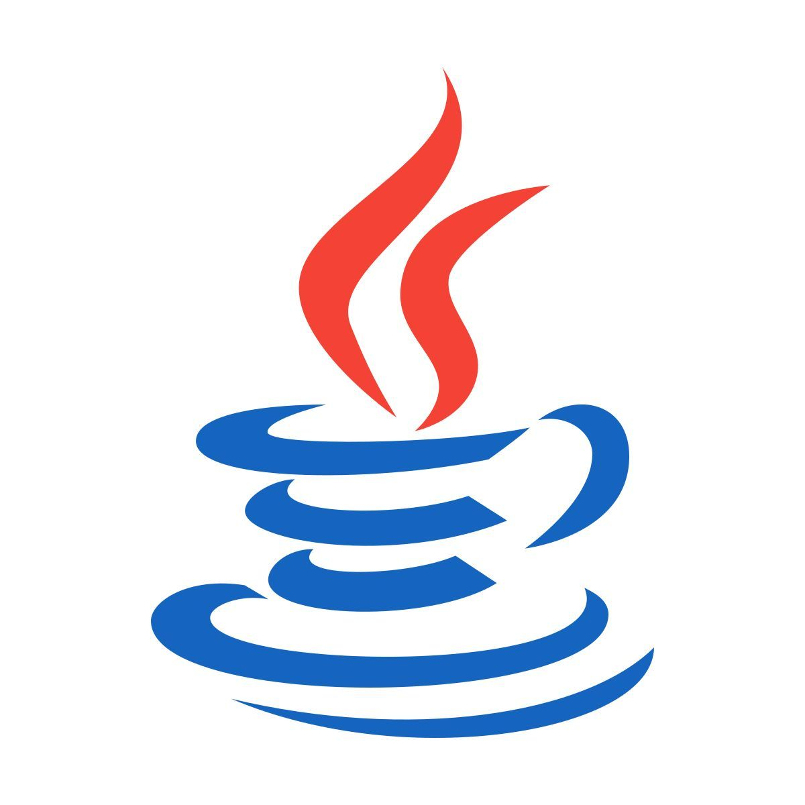
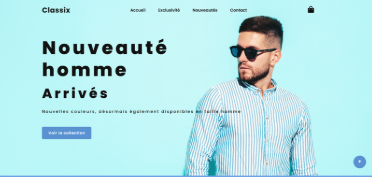
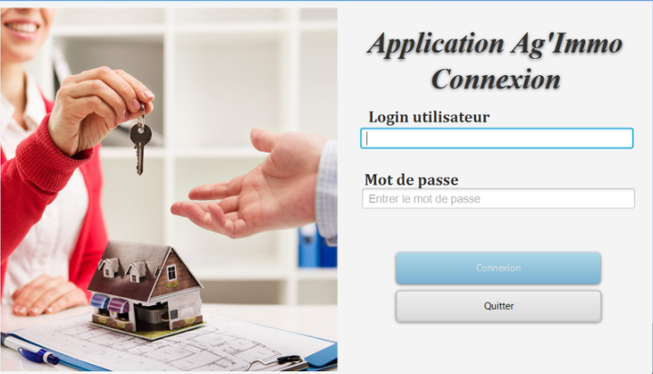
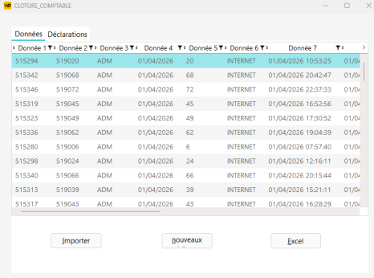
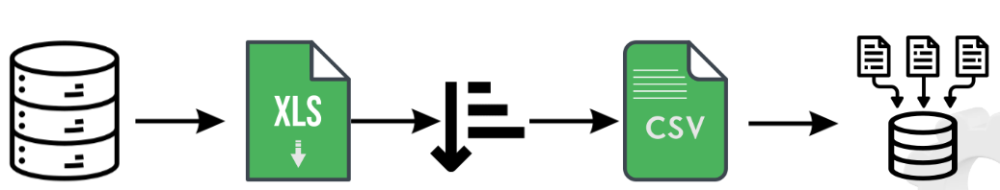
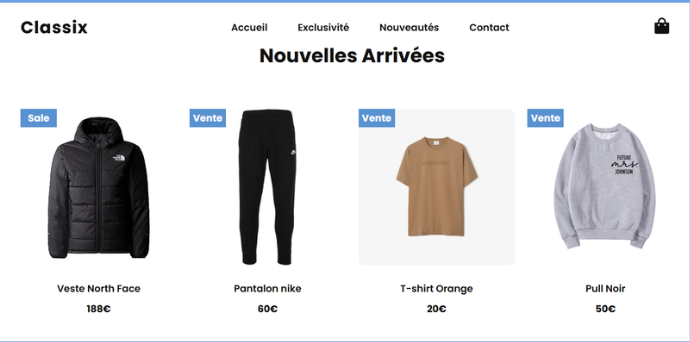
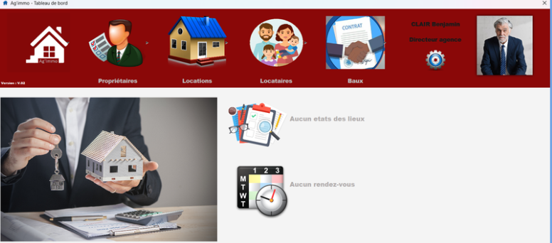

A PROPOS DE MOI :
Passionnée d'informatique, j'aime créer, apprendre et donner vie à mes idées à travers le code. Curieuse et créative, je cherche toujours à concevoir des projets qui sortent de l'ordinaire.
Passionnée d'informatique, j'aime créer, apprendre et donner vie à mes idées à travers le code. Curieuse et créative, je cherche toujours à concevoir des projets qui sortent de l'ordinaire.
HTML

CSS

JavaScript

PHP

SQL

Oracle

Java

Python
WinDev

WordPress


LANGAGES UTILISÉS: CSS, HTML, JS
IDE UTILISÉ: Visual Studio Code
CONDITIONS: Seule
CONTEXTE: Projet Personnel

LANGAGES UTILISÉS: Java, SQL
IDE UTILISÉ: Eclipse
CONDITIONS: En binôme
CONTEXTE: Projet de formation

LANGAGES UTILISÉS: WinDev, SQL
IDE UTILISÉ: WinDev Environment
CONDITIONS: Seule
CONTEXTE: Stage (JBA-Soft)

LANGAGES UTILISÉS: SQL, Oracle
IDE UTILISÉ: DBeaver / Golden
CONDITIONS: Seule
CONTEXTE: Stage (JBA-Soft)

BUT informatique en année spéciale, regroupant la première et la deuxième année.
Service informatique aux organisations
Développement Web, Système et Réseau
LI- Tronc commun
(Sciences cognitives et économie)
(Option SVT et Physique chimie)
Développement d'une application d'encaissement autonome (WinDev) et nettoyage/migration de données communales vers Oracle.
Création du nouveau site web de la mairie de Fontaine sous WordPress.
Création d'une application web pour les rencontres parents-professeurs.

Ce projet consiste en la création d'un site vitrine e-commerce responsive nommé Classix, dédié à la vente de vêtements et d'accessoires. Le site a été conçu en HTML, CSS et JavaScript, avec une mise en page moderne et adaptée à tous les écrans (ordinateur, tablette, mobile). L'objectif était de présenter les produits de manière claire et esthétique, avec une navigation intuitive pour l'utilisateur.

Ag'immo est une application de gestion d'agence immobilière développée avec JavaFX pour l'interface graphique, et qui utilise une base de données pour gérer efficacement les informations. Elle permet de créer et gérer des agents, d'enregistrer des biens immobiliers, de suivre les réservations, et d'organiser l'ensemble des opérations d'une agence.
Développement d'une application lourde et autonome réalisée dans le cadre de mon stage de fin d'études chez JBA-Soft. L'objectif principal était de sécuriser et tracer la gestion des encaissements de manière indépendante du progiciel principal de l'entreprise (PHASEO).
Fonctionnalités clés développées :
• Création d'une interface graphique multi-onglets (Données, Déclarations, Clôture Comptable).
• Automatisation de l'importation de fichiers de traitement sous forme de tableaux structurés.
• Élaboration de requêtes SQL complexes et jointures pour extraire et analyser dynamiquement les lignes de la base de données en temps réel.
• Exportation automatisée des données vers Excel avec génération d'archives ZIP chiffrées et sécurisées par mot de passe.
Cette mission transversale consistait à préparer, nettoyer et intégrer les données d'abonnés de nouvelles communes clientes au sein du Système de Gestion de Base de Données (SGBD) Oracle de JBA-Soft, afin qu'elles puissent exploiter le logiciel PHASEO.
Processus technique mis en œuvre :
• Exportation & Diagnostic : Récupération et analyse des fichiers initiaux fournis par les collectivités au format tableur (XLS).
• Reformatage & Nettoyage : Écriture de scripts SQL de transition pour standardiser et restructurer les profils des usagers (séparation des civilités, noms, adresses de compteurs et jointures de voies).
• Importation : Intégration massive des fichiers convertis en format plat (CSV) vers la base de données de production Oracle à l'aide de l'outil interne Migrator.